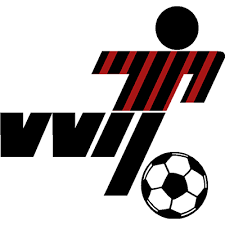
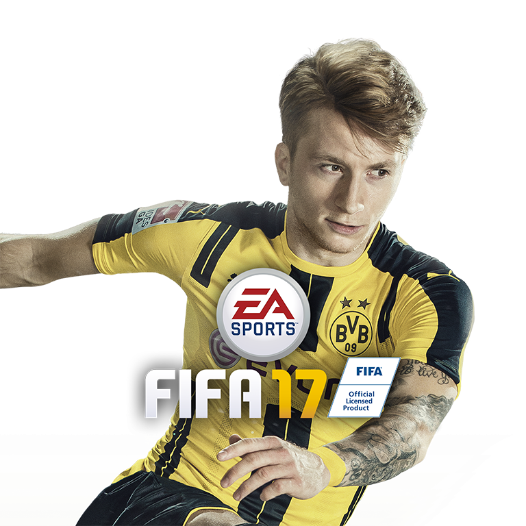
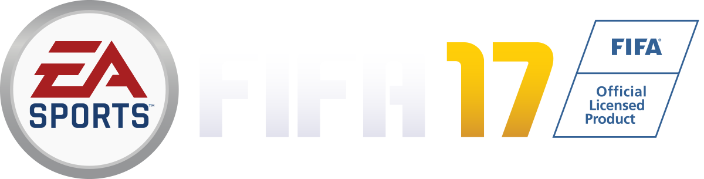
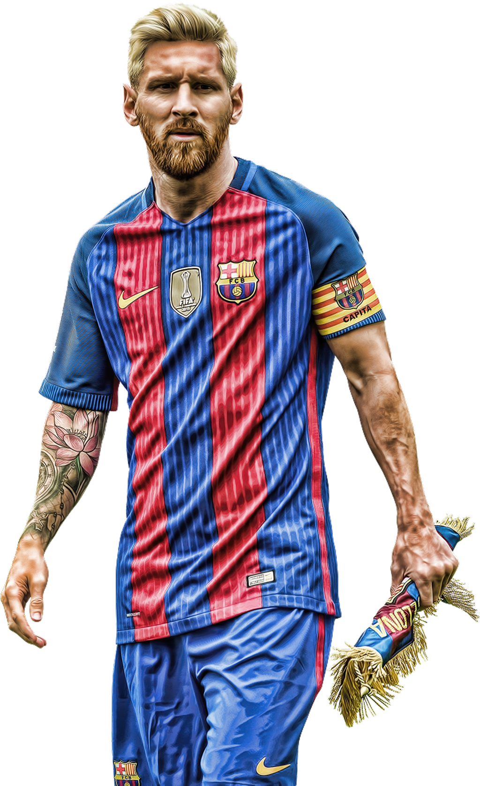
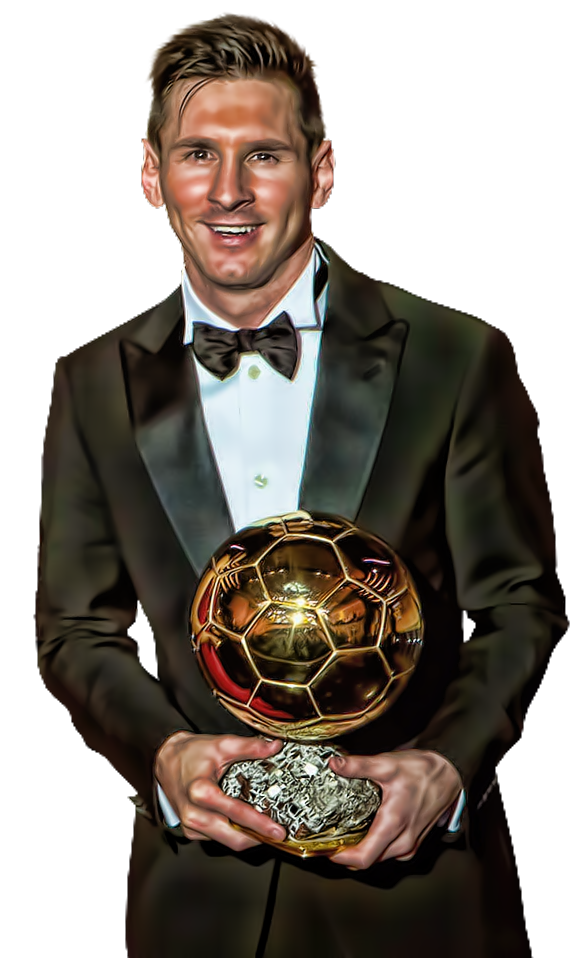

Inleiding
Hi, mijn naam is Hanad Bodle en op deze pagina ga ik jullie wat vertellen over mijn hobby "voetbal"
Ik ben zelf groot fan van het volgen van de laatste updates en het kijken naar mijn favourite clubs,
die ik dan ook fanatiek support! Ik ga op deze pagina niet alleen vertellen wat ik leuk vind aan het spelletje,
ook wil ik jou wat inzicht geven in:
Ik hoop dat na het bekijken van mijn pagina je een stuk meer te weten bent gekomen over mijn hobby, enjoy!
Mijn ervaringen
Ik Heb zelf ook gevoetbald, dit was vooral als jeugd speler. ik ben begonnen met voetbal op 9 jarige leeftijd bij een club genaamd, VVY "Voetbal Vereningin Ijsselstein". Ik ben begonnen in de D12 waar we direct het eerste jaar kampioen zijn geworden van de 2deklasse!
Het jaar daarna zijn 4 jongens uit mijn team doorgestroomd naar de selectie incusief ik zelf,
ik kwam terecht in de E2. We speelde eerste
klasse en werden dat seizoen 2de!
Toen was ik dus oud genoeg om op een heel veld te spelen en kwam ik in de D3. Waar we in het eerste jaar direct kampioen werden en de kwartfinale van de nationale beker hadden bereikt. daarna ben ik gestopt met voetballen en ben ik gaan basketballen. Waar ik nog heb meegetraind met de provincie selectie genaamd U-BALL. na 4jaar basketballen ben ik toch weer gaan voetballen dit keer bij SVM Woudenberg. hier heb ik gevoetbald in de B3 waar ik 2 seizoenen op rij topscorder ben geworden.
Een grappig feit is dat ik per seizoen een plaatse opschoof in het team. in de D12 begon ik als CV "Centrale Vedediger" toen in de D3 werd ik CM "Centrale Middenvelder" en uiteindelijk in de B3 CA "Centrale aanvaller" Ik heb dus wel altijd in het ass van het veld gespeeld. Ik bewaar zeer goede herrineringen aan mijn voetbal tijd. ik ben nu alweer een jaar of 5 gestopt met zelf voetballen. Het kriebelt wel moet ik eerlijk toegeven dus misschien dat ik mij in de toekomst nog een keer schrijf bij een leuk club!

Mijn favourite clubs
De eerst club waar ik echt fan van ben geworden op 9 jarige leeftijd is PSV Eindhoven.
dat had vooral te maken met het feit dat ik mijn eerste live wedstrijd PSV-FC Twente is geweest.
dit heeft veel indruk op mij gemaakt, en dat jaar werd PSV ook kampioen, tot op de dag van vandaag is dat mijn favourite club!
Ik heb daarna geen wedstrijd meer van PSV bij gewoond maar ik hoop dat snel weer te kunnen doen!

De 2de club die ik sterk support is FC Barcelona, dit doe ik sinds mijn 12de rond die tijd ben ik verliefd geworden op het mooieste voetbal ter wereld. toen der toen nog met Pep Guardiola aan het roer. die een nieuw soort Tikkie Taka voetbal liet zien. waar bij passing essentioneel is!
hij had daar toen der tijd ook de spelers voor. na zijn vertrek is het allemaal iets minder geworden tot. 3 jaar geleden waar Luis Enriuqe aan het roer staat en de club weer naar de absolute top heeft gebracht.

De 2de club waar ik ook groot fan ben is Arsenal FC, mede door mijn neef die in engeland woont en hier fan van is. Ben ik ook arsenal onder een vergroot glas gaan bekijken. en ook hier wordt geweldig voetbal gespeeld. onder Arsene Wenger die al 20 jaar hoofd coach is van Arsenal!
het enige wat bij deze club uitblijft zijn de echt grote prijzen. hopelijk is dit jaar het jaar?!

fifa
FIFA (in oudere edities bekend als FIFA Soccer of FIFA Football) is een reeks voetbalsimulatiespellen waarmee de speler met een land of club kan spelen. De serie bestaat sinds 1992 en wordt ontwikkeld door EA Sports. Ook zijn er edities van EK's en WK's. Ieder jaar verschijnt een nieuwe versie van het spel met updates van ploegen, competities en spelers, en probeert men de kwaliteit van het spel te verbeteren. Electronic Arts heeft het contract met FIFA verlengd en mag nog tot 2022 FIFA-spellen maken.

Ik speel zelf al een tijdje fifa vanaf fifa 12. het doel met fifa is om het echte spel zo goed mogelijk na te bootsen in jou eigen spel. Dit is natuurlijk het leukst om samen te doen met vrieden. Maar er ligt ook een hele online wereld open om tegen de beste Fifa spelers van de hele wereld te spelen! Overmorgen komt Fifa 17 uit en ik ben er bij!

beste speler ter wereld

De beste speler ter wereld is zonder twijfel Lionel Andereas Messi, de nu 29-jarige Argentijn verbaast vriend en vijand niet alleen met zijn ongekende scorings drift maar ook met zijn fluwele techniek. messi is een gift voor de sport en de liefhebber. Al jaren is hij de onbetwiste nummer in voor zowel club "Barcelona" als Land "Argentinie" hopelijk kunnen we nog jaren genieten van dit fenomeen en leefende legende.
Lionel Messi maakte zondagavond in de verloren wedstrijd tegen Valencia (1-2) het vijfhonderdste doelpunt in zijn profloopbaan: 450 voor Barcelona en 50 voor Argentinië. VI dompelde zich onder in de cijfers van de 28-jarige Argentijnse aanvaller.
Messi has 632 wedstrijden nodig om de grens van vijfhonderd doelpunten te bereiken. Dat levert hem een indrukwekkend moyenne op van 0,79 goals per duel.
Tweederde van Messi's goals voor Barcelona en Argentinië (325) kwamen tot stand op aangeven van ploeggenoten. Bij Barcelona is Dani Alves de speler die de meeste goals van Messi voorbereidde (veertig), bij de nationale ploeg is dat Sergio Agüero (vijf).
Namens Barcelona is Sevilla zijn favoriete tegenstander met 25 goals in evenzovele duels. Ook tegen Atlético Madrid scoorde Messi 25 keer, maar dan in dertig wedstrijden. Bij Argentinië zijn Brazilië en Paraguay zijn meest gewillige slachtoffers (elk vier goals, in respectievelijk zeven en acht interlands).
